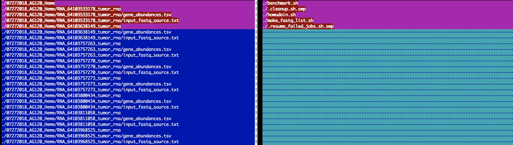

Chapter 4 Toolbox
4.1 Command Line Tools
4.1.1 Bioinformatics
4.1.1.1 Get average read length from a .bam file
samtools view sorted.bam | head -n 1000000 | cut -f 10 | perl -ne 'chomp;print length($_) . "\n"' | sort | uniq -c4.1.2 Docker
4.1.2.1 Basic commands
Here are a few helpful commands for working with docker images
docker ps -a # Lists containers (and tells you which images they are spun from)
docker images # Lists images
docker rm <container_id> # Removes a container
docker rmi <image_id> # Removes an image
# Will fail if there is a running instance of that image i.e. container
docker rmi -f <image_id> # Forces removal of image even if it is referenced in multiple repositories,
# i.e. same image id given multiple names/tags
# Will still fail if there is a docker container referencing image4.1.2.2 Pruning
# remove dangling images
docker rmi $(docker images --filter “dangling=true” -q --no-trunc)
# find other untagged images (with possible children) (<none>:<none>)
docker images -a | grep "none" | awk '{print $3}'
# try removing them
docker rmi $(docker images -a | grep "none" | awk '{print $3}')
# if any left because of clingy children, get __parent.ID__ (ID of untagged image) and then:
# example: docker inspect --format='{{.Id}} {{.Parent}}' $(docker images --filter since=14a1e7116365 -q)
docker inspect --format='{{.Id}} {{.Parent}}' $(docker images --filter since=__parent.id__ -q)
# then remove listed __children.id__ one by one
# example: docker rmi 382096f13260254f3c472bf63f063b8ecbc2d4cc06fe7a940d6fbd4636ef77b1
docker rmi __child.id__4.1.3 File system
4.1.3.1 List top 5 largest files
du -a /path/to/my/dir/ | sort -n -r | head -n 5Example:
du -a /bin | sort -n -r | head -n 5## 5160 /bin
## 1496 /bin/ksh
## 696 /bin/zsh
## 696 /bin/sh
## 688 /bin/bash4.1.3.2 List files in a folder separated by delimeter
ls -1 /path/to/my/dir/ | paste -sd "," -Example:
ls -1 /bin | paste -sd "," -## [,bash,cat,chmod,cp,csh,date,dd,df,domainname,echo,ed,expr,hostname,kill,ksh,launchctl,link,ln,ls,mkdir,mv,pax,ps,pwd,rm,rmdir,sh,sleep,stty,sync,tcsh,test,unlink,wait4path,zsh4.1.3.3 Compare structure of two directories
vimdiff <(cd dir1; find . | sort) <(cd dir2; find . | sort)Example: 
4.1.4 Sun Grid Engine
4.1.4.1 Deprioritize jobs in queue
qalter -p -100 {jobid1..jobidn}4.1.5 vim
4.1.5.1 Repeat content of line in new column
# repeat content of line
# a
# b
# c
# becomes
# a = C.a
# b = C.b
# c = C.c
:%s/.*/& = C.&4.2 R
4.2.1 Heatmaps
4.3 python
4.4 perl
4.4.0.1 Get number of lines in a file
open(my $input, "-|", "wc -l < $fastqs");
my $rc = <$input>;
if ($rc =~ /(\d+)/) {
print $rc;
}